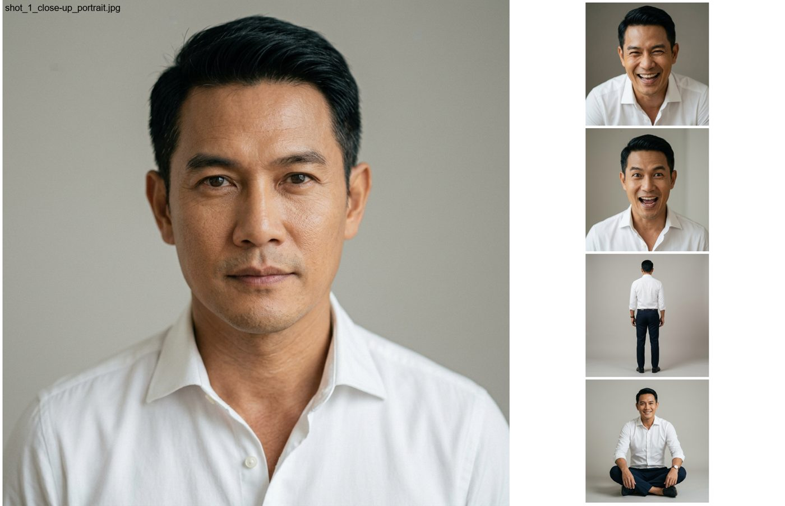
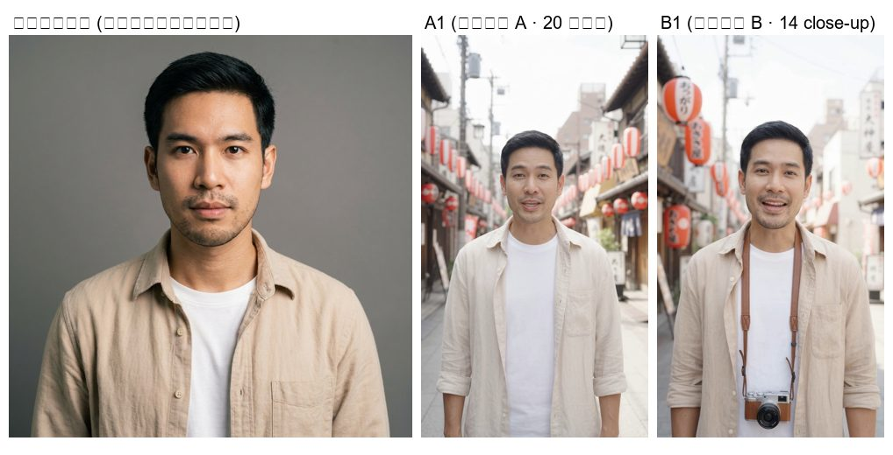

🗺️ ภาพรวมธุรกิจ Ichino Tour
แบรนด์หน้าฉาก: Ichino Tour (Thailand) — ตัวแทน Land Operation ประเทศญี่ปุ่น (Thailand Representative)
หลังฉาก: พันธมิตรญี่ปุ่น 2 เจ้าให้ Net Rate + สิทธิใช้ชื่อบริษัท — ยังไม่เปิดบริษัทเอง
โครงสร้าง 4 ชั้น
ชั้น 1 หน้าฉาก (ลูกค้าเห็น) = Ichino Tour (Thailand) + Gochisou (จองร้าน งานนอก)
เว็บ ichinotour-thailand.com · Gochisou Pages · quotation v6 · LINE @ichinotour
ชั้น 2 เครื่องมือทำงาน = Master Data (Firestore 855) · quotation v6 · JLOS · 台帳/King BUS ระบบ
ชั้น 3 หลังฉาก (ซัพพลาย) = Ichino JP (Kim) · HIC (Shu) · King BUS (SENEI) · CHI (โรงแรม)
ชั้น 4 ลูกค้า = HAI · ma-meow (ปัจจุบัน) · GS25 · Smile Travel (เคย) · B2B 50 เจ้า (ยังไม่ทัก)พันธมิตรหลัก 2 เจ้า
| เจ้า | ผู้ติดต่อ | บทบาท |
|---|---|---|
| Ichino Tour (ญี่ปุ่น) | Kim-san / Jong-yeon — ichinotour@gmail.com | เจ้าที่ 1 — Net Rate + ใช้ชื่อได้ |
| HIC (株式会社エイチアイシー) | Shu-san — mirai358358@gmail.com | เจ้าที่ 2 — 第3種旅行業/手配業, JTAC |
โมเดล: Net Price / B2B Rate (ราคาทุน JPY) → บวก Margin เอง · เอกสารออกนาม "Thailand Representative"
ซัพพลายอื่น
| เจ้า | รายละเอียด |
|---|---|
| King BUS = SENEI KOTSU | ใบขอรถ rsv@cgman.jp → SENEI Flow — supplier รถบัส (台帳 อัตโนมัติ) |
| CHIグループ | Airport Plaza Hotel นาริตะ — 4,500–7,000 เยน/คืน (10+ ท่าน) |
| Supplier ฟูจิ/ยามานาชิ | Fujizakura, Hedistar, Fujisan Garden, Marroad, Kasugai View, Asia Kawaguchiko/Yamanakako, Yukari no Mori |
⛔ ต้นสังกัด kimono — ห้ามปน / ห้ามให้รู้งานข้างเด็ดขาด (กฎ stealth)
🔒 ห้ามมี password/token/ราคา margin ภายในในกระดานนี้ — repo สาธารณะ
📊 สถานะงาน
อัปเดตอัตโนมัติโดยพาเที่ยวทุกปิดงาน (จาก checkpoint) — timestamp ด้านบน
การ์ดงาน (Project Cards — PC_INDEX 7 ก.ย. 69)
| การ์ด | งาน | สถานะ |
|---|---|---|
| PC-001 | Master Data (Hotel/Restaurant/Bus) | In Progress — master 855 ใช้จริง เหลือ verify RAW 1,323 |
| PC-002 | Format Migration .md | Done |
| PC-003 | B2B Smile Travel (ติดต่อ) | Pending |
| PC-004 | ทดลอง serena-slim | Done |
| PC-005 | ขยาย Thin MCP 14 repo | Done |
| PC-006 | Meawbin Strategy 2026 (เรียนเทรด 56 คลิป) | In Progress — notes 13/56 |
| PC-007 | Quotation Builder v6 | In Progress — rate UNVERIFIED รอพี่เจ |
| PC-008 | ย้ายบัญชี Google | Pending (รอสั่งเริ่ม) |
| PC-009 | Gochisou TikTok Launch | In Progress — pilot v3 reject รอคลิปใหม่ |
| PC-010 | TikTok Liked Classify 2023-2025 (2,719) | Blocked (รอ data JSON) |
| PC-011 | DSH Tooling & Knowledge Ops (B20/B21/corpus/cloud scheduler) | In Progress — ใหม่ 7 ก.ย. |
เครื่องมือ
| เครื่องมือ | สถานะ | หมายเหตุ |
|---|---|---|
| เว็บ ichinotour-thailand.com | <span class="tag good">LIVE</span> | Firestore rules แก้แล้ว (quotations create ผ่าน) — เนื้อหาตรวจกับพี่เจ |
| quotation v6 builder | <span class="tag good">ใช้ได้</span> | เรทเยน-บาท อัตโนมัติจาก gist (0.2066) — rate UNVERIFIED รอพี่เจตรวจ |
| Gochisou landing (งานนอก) | <span class="tag good">LIVE</span> | Pages — ฟอร์ม→Firestore→LINE ครบวงจร (ทดสอบผ่าน) — รอ domain Vercel |
| 台帳 / King BUS ระบบ | <span class="tag good">อัตโนมัติ</span> | master ถูกไฟล์ + token ใหม่ + PDF→LINE (การบ้าน: PDF สวย + ส่งไฟล์จริง) |
| daily-news LINE/เมล | <span class="tag good">อัตโนมัติ</span> | ย้าย Task Scheduler เครื่อง (07:00) — เช็ครอบแรก 30 ส.ค. |
| Backup Vault | <span class="tag good">อัตโนมัติ</span> | zip→Drive ทุก 18:30 (เก็บ 14) |
| Master Data | <span class="tag bad">ค้าง</span> | verify RAW 1,323 ค้าง — rate รอพี่เจ |
Master Data (PC-001)
| รายการ | จำนวน | สถานะ |
|---|---|---|
| รวม entity | 2,178 | HOTEL 312 · RESTAURANT 1,247 · ATTRACTION 598 · BUS/PARKING 21 |
| VERIFIED | 855 | master_data ใน Firestore (HOTEL/RES/ATTR/BUS) |
| RAW (ยังไม่ตรวจ) | 1,323 | ติดหลักฐานนอกเครื่อง — อีเมล supplier / ชื่อ List เดิม |
| Rate History | เริ่มแล้ว | UNVERIFIED รอพี่เจตรวจ |
ระบบครบวงจร (สายพาน AI ops)
| ระบบ | บทบาท | สถานะ |
|---|---|---|
| DSH (DeepSeek) | execution หลัก — agents, checkpoint, Discord, GitHub | ✅ ใช้งาน |
| ModLens vision | อ่านภาพใน session (Gemini bridge) | ✅ ใช้ได้ (quota ฟื้น) |
| Playwright browser | ควบคุม browser จริง | ✅ |
| MCP client | serena + playwright + vault + (firebase MCP config พร้อม — รอ restart) | ✅ |
| สคริปต์กลาง | checkpoint/commit/push/Discord | ✅ |
| Task Scheduler | daily-news 07:00 · taicho 16:00 · backup 18:30 · yen 08:00 · Gochisou LINE 15 นาที | ✅ 5 งาน |
| Google Workspace MCP | รอ official — third-party ไม่ใช้ (supply chain) | ⏳ |
รายละเอียด: 00_SOP_Master/01_AI_Protocols/ ใน Vault
งานค้าง — ดูจาก section Checkpoint (อัตโนมัติ)
รายการงานค้างที่เขียนมือในหน้านี้ ถูกลบออก 25 ก.ย. 69 เพราะค้างมาตั้งแต่ 7 ก.ย. และไม่ตรงกับของจริงแล้ว
ตั้งแต่นี้ให้อ่านจาก section Checkpoint ซึ่งดึงCHECKPOINT_LATEST.mdจากphathiao-knowledge-brainอัตโนมัติทุกชั่วโมง
งานค้างใน checkpoint จัดกลุ่มแล้ว (งานประจำ · รอพี่เจ · งานระบบ · คอนเทนต์ · Meawbin · ข้อมูล)
🗺️ System Map
อัปเดตล่าสุด 26 ก.ย. 69 (รอบ 45) — เขียนจาก §9 System Map ของการ์ดจริง 14 ใบ (ครบทุกใบแล้ว)
สถานะ: done (เขียว) · in_progress (ฟ้า) · blocked (แดง) · pending (เทา)
กติกา: ตัวเลข/สถานะในหน้านี้ต้องมีที่มาจากการ์ดหรือคำสั่งที่รันได้จริง — ห้ามเขียนงานค้างไว้ที่นี่ (งานค้างอยู่ที่ §10 ของการ์ด)
ระบบงานทั้งหมด — 14 การ์ด
| การ์ด | ระบบ | %เสร็จ | สถานะ | เจ้าของ | หลักฐานล่าสุด |
|---|---|---|---|---|---|
| PC-001 | Master Data (HOTEL/RESTAURANT/ATTRACTION/BUS) | 93 | 🔵 in_progress | พาเที่ยว | Firestore master_data 855 (HOT178·RES495·ATTR170·BUS12) · VERIFY ยัง 855/1,323 |
| PC-002 | Format Migration (กติกา format กลาง) | 100 | ✅ done | พาเที่ยว | sync repo ab468b4 (22 ส.ค. 69) |
| PC-003 | B2B Outreach (Smile Travel / เอเจนซี่) | 67 | 🔵 in_progress | พี่เจ + พาเที่ยว | แม่แบบเมลฉบับ 1 อนุมัติ 25 ก.ย. 69 · pilot 3 ร้านแรกฟรี |
| PC-004 | Serena Slim (MCP token) | 100 | ✅ done | พาเที่ยว | 13 tools ≈ 2,968 tok (ลด ~76.5% จาก serena เต็ม) |
| PC-005 | Thin MCP / ทะเบียน repo | 100 | ✅ done | พาเที่ยว | tools/projects.json activate 15/15 ผ่าน |
| PC-006 | Meawbin Strategy 2026 | 92 | 🔵 in_progress | พาเที่ยว | เรียนจบ 27/56 · KNOWLEDGE v2.9 / RULES v2.8 · notes 27 ไฟล์ |
| PC-007 | Quotation Builder v6 | 81 | 🔵 in_progress | พาเที่ยว + พี่เจ | merge f7e37fd (P4 แผนที่/time v1-v9) · print ยังพัก (พี่เจ: "แย่มาก ยิ่งแก้ยิ่งผิด") |
| PC-008 | Google Account Migration | 13 | ⏳ pending | พี่เจ + พาเที่ยว | แผน 8 ระยะครบ · ยังไม่เริ่มระยะ 0 (inventory) |
| PC-009 | Gochisou TikTok Launch | 75 | 🔵 in_progress | พาเที่ยว + พี่เจ | 4 คลิปโพสต์ · วิวสะสม 822 · FB 356 · ทัก LINE 0 · /phoy/ = 200 |
| PC-010 | TikTok Liked Classify | 14 | ⏳ pending | พี่เจ + พาเที่ยว | สคริปต์พร้อม · รอไฟล์ export จากพี่เจ |
| PC-011 | DSH Tooling / Knowledge Ops | 100 | ✅ done | พาเที่ยว | corpus 2,673 docs · MCP 2 entry ผ่าน handshake (38 tools) |
| PC-012 | Owner Mail + Local Automation | 59 | 🔵 in_progress | พาเที่ยว | task PaTeaw-OwnerMailIngest / JournalIngest = all OK · สำรอง Vault ทำงาน 2 ทาง |
| PC-013 | Knowledge / Checkpoint / Dashboard | 71 | 🔵 in_progress | พาเที่ยว | --summary รันจริง · canary ผ่าน · eval 10/10 (N/A 1) |
| PC-014 | Creator Knowledge Clips | 57 | 🔵 in_progress | พี่เจ + พาเที่ยว | กลั่นแล้ว 10 คลิป (ชุด 1-2) · คลัง prompt H3 222 entry |
สรุปภาพรวม: done 4 · in_progress 9 · pending 2 · blocked 0 (จาก 14 การ์ด — blocked ระดับส่วนอยู่ใน PC-007 print และ PC-012 Task logon)
Local Embedding (chroma content brain)
ภาพรวม: vector search งานพาเที่ยว — ครบ 8/8 ส่วน · store local vec_test · model default local bge-m3 (dim 1024)
| # | ส่วน | สถานะ | หลักฐาน |
|---|---|---|---|
| 1 | corpus collect (vec_collect.py) | ✅ done | 2,673 docs · 174 src (26 ก.ย. 69) — เพิ่ม glob ต่อโฟลเดอร์ 04_Sales_Marketing · 03_AI_Checkpoints · 03_Reference_Indexes · 04_Profiles_and_Governance · 01_AI_Protocols |
| 2 | store + query (patheaw_work) | ✅ done | local bge-m3 dim 1024 · collection แยก patheaw_local / patheaw_bge สำหรับทดสอบ |
| 3 | meter (embed_meter.py) | ✅ done | หลังเปลี่ยนเป็น local = API call 0 (build/search) |
| 4 | watcher อัตโนมัติ | ✅ done | task PaTeaw-ChromaWatcher = Ready · รอบทุก 30 นาที |
| 5 | ครอบการ์ด PC | ✅ done | 14/14 ใบ (pc_001…pc_014) |
| 6 | ครอบ serena memory | ✅ done | 12/12 (mem_* + gochisou_memory) |
| 7 | ครอบ rules + SOP | ✅ done | system-rules/ ทุกระบบ · 02_Operations_SOP/ · indexes · governance |
| 8 | auto-load ใน /work | ✅ done | chunk มี section → คืน {src, section} ให้เปิดไฟล์จริงจาก hint |
สาขา / เวอร์ชัน
| ต้นทาง (ราก) | แตกเป็น / เวอร์ชัน | จำนวน | สถานะแต่ละตัว |
|---|---|---|---|
| embedding engine | local bge-m3 (default) · API gemini (fallback) · MiniLM (สำรอง) | 3 | default · legacy VEC_ENGINE=api · collection แยก |
| collection | patheaw_work · patheaw_local · patheaw_bge | 3 | prod · ทดสอบ · ทดสอบ |
| วิธีเก็บเข้าคลัง | whitelist ชื่อไฟล์ (เดิม) · glob ต่อโฟลเดอร์ (26 ก.ย. 69) | 2 | เลิกใช้ · ใช้จริง |
หมายเหตุการดูแลหน้านี้
- ตัวเลขที่ต้องรีเฟรชทุกครั้งที่ปิดรอบ: corpus docs/src · สถานะการ์ด · ตัวเลข KPI ของ PC-009
- หน้านี้สะท้อน §9 System Map ของการ์ด — ถ้าการ์ดเปลี่ยน หน้าต้องเปลี่ยนตาม (ไม่เขียนมือแยกจากหลักฐาน)
- ห้ามใส่รายการงานค้างในหน้านี้ (งานค้างอยู่ที่
03_AI_Checkpoints/PC-XXX.md§10)
MiniMax Studio — เครื่องมือ + สถานะงาน
อัปเดต 17 ก.ย. 69 (ตัวเลขจากของจริง: gateway/api/v1/credit/wallet·list_capabilities·get_model_concurrency· นับการใช้ tool จาก session log DSH 163 ไฟล์)
ตัวเลขทุกบรรทัดมาจากการรันจริง — ไม่มีข้อไหนเป็น "คาดว่า"
1. ตัวเลขจริง (17 ก.ย. 69)
| รายการ | ค่า |
|---|---|
| เครดิตคงเหลือ | 3,820 (plan Media Plan Starter · เติมเป็นรอบรายเดือน) |
| ราคาที่วัดได้ | 768P = 70 เครดิต/วิ → 5วิ 350 · 10วิ 700 · 15วิ 1,050 |
| 2K (≈×2.4) | 15วิ ≈ 1,680 · 10วิ ≈ 1,120 · 5วิ ≈ 560 |
| ความยาวสูงสุดของ H3 | 4–15 วิ (เกิน 15 ไม่ได้ — งานพูดยาวต้องใช้ kling avatar) |
| คิวขนาน (concurrency) | MiniMax-H3 = 5 slots (ว่าง 5/5) · H3-Max = 5 · H3-Max-Turbo = ไม่จำกัด |
| โมเดลที่มี | MiniMax H3 · MiniMax H3 Max · MiniMax H3 Max Turbo (Max ไม่มี 2K และไม่มี generate_audio) |
| งบ Gochisou (มติพี่เจ 17 ก.ย. 69) | 1,000 บาท/เดือน |
2. งบต่อคลิป — ตีกรอบให้ H3 ไม่เกินเครดิต
หน่วยมาตรฐาน 1 คลิป = "hook test 768P 5วิ (350) + final 2K 15วิ (1,680)" = 2,030 เครดิต
| แผน | องค์ประกอบ | ใช้ | เหลือจาก 3,820 |
|---|---|---|---|
| แนะนำ | แนวA: hook 350 + final 2K 1,680 · แนวB: hook 350 + final 768P 1,050 | 3,430 | 390 |
| ปล่อยของ 2 ตัว 2K | แนวA hook 350 + 2K 1,680 · แนวB 2K 1,680 (ข้าม hook B) | 3,710 | 110 |
| ครบ 3 แนว ไม่ 2K | 3 × (hook 350 + final 768P 1,050) | 4,200 | ❌ เกิน |
| 3 แนว 768P ล้วน | 3 × 1,050 | 3,150 | 670 |
- กฎเหล็ก: ห้ามเจน 2K ก่อนเทสต์ hook 5 วิ (playbook §2) · เช็คยอดก่อนเจนทุกครั้ง
- คอขวดจริงไม่ใช่เครดิต — ถ้าแพ็ก Starter ≈ ฿300/10,000 เครดิต (บันทึก 9 ก.ย. 69: $8.4) งบ ฿1,000/เดือน ≈ ~3 หมื่นเครดิต = ~19 คลิป 2K/เดือน ⇒ ผลิตไม่ทันอยู่แล้ว · ที่จำกัดคือ "ก้อนที่มีตอนนี้" (3,820) ไม่ใช่งบรายเดือน (ต้องยืนยันราคาแพ็กจริง)
3. Tool ทั้ง 58 — สถานะการใช้จริง (นับจาก session log 163 ไฟล์)
- ใช้จริงแล้ว 16 · ไม่เคยแตะ 35 · อ้างถึงแต่ไม่มีบันทึกการเรียก 7
3.1 ใช้จริงแล้ว 16
generate_video 95 · generate_audio_speech 76 · generate_image 30 · memory 12 · analyse_media 8 · list_capabilities 8 · image_search 8 · canvas_list_nodes 7 · plugin_agent_invoke 6 · canvas_get_node 4 · voice_prepare 4 · media_transcribe 4 · plugin_agent_describe 3 · plugin_agent_open_editor 3 · get_model_concurrency 2 · search_knowledge 2
3.2 ไม่เคยแตะเลย 35
⚠️ ตัวเลขนี้เก่า (17 ก.ย. 69) — 9 ตัวในรายการนี้ถูกทดสอบสดแล้วใน §4 ของไฟล์เดียวกัน (audio_analyze_music·audio_meta·web_media·asset_center_search·image_remove_background·select_image_recipe·search_knowledge·list_comfyui_template·get_model_concurrency) และอีก 10 ตัวผ่านการทดสอบจริง 20 ก.ย. 69 (ดู §8) ⇒ ห้ามใช้รายการนี้ตัดสินว่า "ยังไม่เคยใช้" ให้ดู §4 + §8 ก่อน
วิดีโอ/ภาพ: image_remove_background · batch_lip_sync · merge_videos · read
เสียง: audio_analyze_music · audio_meta · audio_separate · generate_audio_music · lyrics_generation · music_cover
วางแผน/แคนวาส: plan_write · plan_get_stage_status · plan_get_stage_detail · plan_get_work_items · plan_update_stage_state · plan_replan · plan_patch_stage · canvas_write_node · canvas_read_text · canvas_grep_text · canvas_apply_text_edits · canvas_group_nodes · canvas_ungroup_node
คลัง/อ้างอิง: asset_center_search · asset_center_use_entity · web_media · select_image_recipe
ComfyUI 8: list_comfyui_template · list_comfyui_workflow · get_comfyui_workflow · edit_comfyui_workflow · run_comfyui_workflow · save_comfyui_workflow · get_comfyui_run_status · open_comfyui
อื่น ๆ: report_outcome
3.3 อ้างถึงแต่ไม่มีบันทึกการเรียก 7 (ไม่ยืนยัน)
ffmpeg · subtitle_format · preview_and_collect_feedback · canvas_group_recent_outputs · add_comfyui_workflow · save_comfyui_run_as_workflow · (นับจาก mention สูงกว่า baseline แต่ parse record ไม่ได้)
4. ทดสอบสด 17 ก.ย. 69 — เฉพาะตัวที่ไม่กินเครดิตเจน
| tool | ผล | หมายเหตุ |
|---|---|---|
audio_analyze_music | ✅ ผ่าน | หลังแก้ runtime: BPM 143.6 · beat_times 5 จุด · impact 11 จุด · mv_summary แนะนำตัดถี่ + จำนวนช็อต ≈ 5 ⇒ ใช้ทำ卡点ตามจังหวะได้ |
audio_meta | ✅ ผ่าน | duration 2.554 วิ · mp3 · bitrate 135,267 |
web_media (inspect) | ✅ ผ่าน | อ่าน metadata คลิปต้นแบบจาก URL ได้ |
get_model_concurrency | ✅ ผ่าน | H3 available 5/5 |
asset_center_search | ✅ เรียกได้ | ผลลัพธ์ ว่าง — ยังไม่มีตัวละคร/สไตล์ที่บันทึกไว้ในคลัง |
image_remove_background | ⚠️ ต้อง copy ไฟล์เข้าโฟลเดอร์แอปก่อน | Path traversal detected เมื่อส่ง path นอกโฟลเดอร์แอป |
select_image_recipe | ❌ | Knowledge directory not found — ต้องติดตั้ง knowledge pack |
search_knowledge | ❌ | Requested knowledge resource root is unavailable (ตัวเดียวกัน) |
list_comfyui_template | ❌ | schema พังในตัวแอป (workflows[0].inputs Required) = bug ของ build |
4.1 แก้ runtime ของแอปแล้ว (17 ก.ย. 69)
- อาการเดิม:
python runtime unavailable: executable not found at C:\Users\chett\.hub-dev\runtimes\python\python.exe - สาเหตุจริง: แพ็กเกจ
librosa/numpyที่แอปเตรียมไว้ compile มาสำหรับ cp312 แต่ junction ชี้ python 3.14 ⇒ImportError: No module named 'numpy._core._multiarray_umath' - แก้: ติดตั้ง python 3.12 (uv) + junction
~\.hub-dev\runtimes\python→cpython-3.12-windows-x86_64-none⇒audio_analyze_musicใช้ได้ทันที
5. ComfyUI — ตอบคำถาม "ถ้ามี backend จะควบคุมได้ไหม"
- ควบคุมได้ในทางเทคนิค (มี 8 tools: list/get/edit/run/save/status/open + add/save-run-as)
- แต่ยังใช้ไม่ได้ 2 ชั้น: ① ไม่มี backend ในเครื่อง (17 ก.ย. 69: ไม่มีโฟลเดอร์ ComfyUI · port 8188/8189/8000 ปิด) ②
list_comfyui_templateพังที่ schema ภายในแอปเอง - ถ้าจะใช้จริง = ติดตั้ง ComfyUI (python + torch + โมเดล หลาย GB) หรือชี้ไป backend ที่รันที่อื่น ⇒ ยังไม่คุ้มกับงานปัจจุบัน (H3 2K พอสำหรับ 15 วิ)
6. งานผลิต (คิวถัดไป)
- เป้า: "คลิปว้าว" 1 ตัวที่ 2K 15 วิ (แนว A UGC เซลฟี่ในร้าน) + 1 ตัวทดลอง 768P (แนว B)
- ลำดับที่ใช้:
audio_analyze_music(จังหวะ/จุดพีก) →image_search(ภาพจริงอ้างอิง) → hook 5 วิ 768P → พี่เจดู → final 2K - QC gate ก่อนส่ง: 3 วิแรกหยุดนิ้ว · มีจุดพีก · ไม่มี AI tell · เทียบคลิปต้นแบบ · ไม่ว้าว = ห้ามส่ง
7. ข้อจำกัดที่ต้องรู้
- tool ในแอปใช้ได้เมื่อ MiniMax Design เปิดอยู่ (gateway
127.0.0.1:8001) - path ของไฟล์ที่ป้อน tool (image/video) ต้องอยู่ในโฟลเดอร์แอป (ไม่งั้น
Path traversal detected) batch_lip_sync+voice_prepare clone=Internal server error(ฝั่งเซิร์ฟเวอร์ 12 ก.ย. 69) — อย่าเสียเวลาลองซ้ำ- เสียงไทยใช้ได้กับ H3
generate_audio: true(i2v) เท่านั้น — Max/Turbo ไม่มีสวิตช์นี้ - งานตัดต่อ/ซับ: ใช้
ffmpeg+subtitle_format+merge_videos(ฟรี ไม่กินเครดิตเจน)
8. ผลทดสอบจริง 20 ก.ย. 69 — เฟส 0 (ฟรี ไม่กินเครดิตเจน)
รันจริงทุกตัว (แอปเปิด · gateway 8001) · หลักฐานไฟล์อยู่ที่output_files\test-*· รายละเอียดเต็มอยู่ที่ Vault04_Sales_Marketing/MiniMax_Skills_Plan_2026-09-11.md§7.5
✅ ผ่าน 10: audio_analyze_music (BGM คลิป 8 = BPM 99.4 · 25 beats · estimated_shot_count 8) · audio_meta · audio_separate · image_remove_background (ไฟล์ต้องอยู่ในโฟลเดอร์แอป) · merge_videos (768×1344 ×2 = 23.625 วิ ตรงเป๊ะ) · subtitle_format (ASS ไทย + เบิร์นแล้วอ่านออกจริง) · read · canvas_write_node/read_text/grep_text/apply_text_edits (4/4) · web_media inspect + download_thumbnail · asset_center_search (คลังว่าง)
❌ ไม่ผ่าน 4: media_transcribe (subtitle) cue_count: 0 · batch_lip_sync Internal server error 2 ครั้ง (ยืนยันซ้ำจาก 12 ก.ย.) · select_image_recipe + search_knowledge (Knowledge directory not found — ไม่มี knowledge pack) · web_media download_video (Requested format is not available — ต้องใช้ format_id จาก inspect)
⏸ ยังทดสอบไม่ได้: asset_center_use_entity (คลังว่าง + ไม่มี tool สร้าง entity ⇒ ต้องสร้างในแอป) · canvas_group_nodes/ungroup_node (ต้องมี ≥2 โหนด)
⚠️ กับดัก 3 ข้อ (lessons #308): ① subtitle_format default font = Microsoft YaHei (จีน) ⇒ ต้องส่ง font_name=Leelawadee UI ② vision ยืนยัน "ซับแสดงผลถูกต้อง" ทั้งที่เฟรมไม่มีซับ — vision_pixel_diff = 0 ⇒ diff ก่อนเชื่อ vision เสมอ ③ -ss ก่อน -i reset timeline ⇒ เฟรมแรกอยู่นอกช่วง cue · ใช้ -i … -ss 1.0
ตัวละคร & แผ่นตัวละคร (Character Sheet)
มติพี่เจ 7 ต.ค. 69 — ตัวละครของแบรนด์มี 4 ตัว · วิธีใช้ = รวมภาพหลายมุมของตัวละครเป็น "แผ่นเดียว" (1 ไฟล์) แล้วแนบแผ่นนั้นให้ Flow ทุกครั้งที่เจน + สั่งใน prompt ว่าให้ใช้คนเดิม
⚠️ ลิงก์ไปไฟล์ในเครื่อง (file://) เปิดจากหน้าเว็บนี้ไม่ได้ ⇒ พาธด้านล่างเป็นข้อความให้ก๊อป · ถ้าต้องกดเปิดไฟล์ ให้ใช้โฟลเดอร์ พาเที่ยว_ลิงก์ บน Desktop
1. ทะเบียนตัวละคร (นับจากโฟลเดอร์จริงในเครื่อง)
| ตัวละคร | บทบาท | จำนวนภาพ | โฟลเดอร์ |
|---|---|---|---|
| Tabi Chan | หญิง · หน้าประจำแบรนด์ Gochisou (อนุมัติ 3 ต.ค. 69) | 22 | Characters Tabi Chan |
| พาเที่ยว | ชาย · พิธีกร/ตัวแทน | 22 | Characters พาเที่ยว |
| Gochisou ชาย 30 ต้น ยังหนุ่ม | ชาย · ตัวละครสำรอง | 21 | Characters Gochisou ชาย 30 ต้น ยังหนุ่ม |
| Ichinotour ชาย 40 ต้น ยังหล่อ | ชาย · ตัวละครสำรอง | 21 | Characters Ichinotour ชาย 40 ต้น ยังหล่อ |
พาธฐาน: H:\My Drive\พาเที่ยว\Gochisou\TikTok\Raw\
2. แผ่นตัวละครแบบ 5 เฟรม (แบบที่ใช้ทดลองรอบใหม่)
Tabi Chan — ตัวละครหญิงหน้าประจำแบรนด์
พาเที่ยว — พิธีกรชาย
Gochisou ชาย 30 ต้น ยังหนุ่ม
Ichinotour ชาย 40 ต้น ยังหล่อ

แผ่น C = 1 ภาพใหญ่หน้าตรง + 4 เฟรมประกอบ (เห็นครบทั้งหน้าและตัว) · ไฟล์จริงชื่อ sheet_C_5frames.png อยู่ในโฟลเดอร์ตัวละครแต่ละตัว
ข้อเสนอจาก vision ที่ยังไม่ได้ทำ: เพิ่มช่อง ยืนเต็มตัวด้านหน้า และ มุมข้าง (profile)
3. แผ่นแบบอื่น + ภาพเทียบผลทดลอง
แผ่น B — close-up ล้วน 14 เฟรม (แบบที่ใช้ทดลองรอบแรก · พี่เจเลือกตัวนี้ในรอบทดสอบ)
ภาพเทียบหน้า: ต้นทาง | A1 (แผ่น 20 ภาพ) | B1 (แผ่น 14 close-up)

4. ผลทดลองล็อกหน้าด้วย Flow (7 ต.ค. 69)
| เรื่อง | ผลที่วัดได้ |
|---|---|
| ล็อกหน้า | ได้ในระดับใช้งาน — ทั้ง A1 และ B1 ยังเป็นคนเดิม ไม่กลายเป็นคนอื่น |
| คะแนน vision | A1 เหมือนต้นทาง 90-95% · B1 75-80% แต่พี่เจเลือก B1 ⇒ เกณฑ์จริงคือ "คลิปน่าดู" ไม่ใช่ % ความเหมือน |
| ราคา Flow | 1.5 เครดิต/วินาที (A1 8.00 วิ = 12 · B1 10.005 วิ = 15 · ยอดบัญชี 40 → 13 ตรงเป๊ะ) |
| เสียง | ยังไม่ได้ทดลอง "ป้อนไฟล์เสียงที่เราล็อกให้ Flow" (รอบแรกเจนโดยไม่มีไฟล์เสียงอ้างอิง) — พี่เจยืนยันว่าทำได้ ต้องทดลอง |
| ยังค้าง | เจนซ้ำ A2/B2 เมื่อโควตา Flow รีเฟรช (เพื่อแยก "ต่างเพราะแผ่น" กับ "ต่างเพราะการสุ่ม") |
5. เกณฑ์ตัดสินภาพที่ใช้จริง (มติพี่เจ 7 ต.ค. 69)
- "คลิปน่าดู" = หน้าตรง · คมชัด · สีหน้า/ท่าทางดี · ดูเหมือนงานจริง
- ไม่ใช่ เปอร์เซ็นต์ความเหมือนกับภาพต้นทาง — vision ทำหน้าที่เป็น "พยาน" ไม่ใช่ "ผู้พิพากษา"
- กติกาเต็มอยู่ใน rules
gochisou.md§4h
6. เปิดไฟล์ในเครื่องยังไง
- โฟลเดอร์
พาเที่ยว_ลิงก์บน Desktop — shortcut เปิดแผ่นตัวละคร/โฟลเดอร์/ผลทดลอง + หน้าindex.htmlรวมลิงก์ - พาธฐานของแผ่น:
H:\My Drive\พาเที่ยว\Gochisou\TikTok\Raw\Characters <ชื่อ>\
📌 Checkpoint ล่าสุด
ไฟล์นี้ถูก ดึงทับอัตโนมัติ จาก phathiao-knowledge-brain ตอน build (ทุก push + ทุกวัน 00:00 UTC)
ห้ามแก้เอง — จะโดนทับ
_รอข้อมูล checkpoint — build ครั้งถัดไปจะดึงมาให้อัตโนมัติ_
🧠 พี่เจ_MEMORY — ทบทวนว่าระบบเราทำอะไรไปแล้วบ้าง
โน้ตนี้เขียนไว้ให้พี่เจอ่านกันลืม — อัปเดตเมื่อระบบเปลี่ยน ไม่ใช่บันทึกรายวัน
ระบบของเรา
| ระบบ | บทบาท | มาตรฐาน/รายละเอียด |
|---|---|---|
Obsidian Vault (H:\My Drive\พาเที่ยว\Obsidian-Vault) | สมองที่ 2 ให้ AI ทุกค่าย — เก็บความรู้, SOP, checkpoint | LLM Wiki / OKF + timestamp ทุกไฟล์ |
GitHub (chettana33) | Source of Truth — โปรเจกต์ 15 ตัว | commit/push ผ่าน checkpoint script กลาง |
Google Drive (H:\My Drive) | ข้อมูลดิบ: Excel, Docs, Sheets, ภาพ | แผนที่ 33 โฟลเดอร์ใน MASTER_INDEX_DRIVE |
| DSH (DeepSeek Harness) | Execution — รันงาน AI | ใช้ Serena slim + Thin MCP |
| Discord (#ai-activity-log) | Audit log กลางทุกค่าย | START / PROGRESS / ALERT / BLOCKED / DONE |
งาน Automation ที่มีแล้ว
| ระบบ | ทำอะไร | ตำแหน่ง/หมายเหตุ |
|---|---|---|
สคริปต์กลาง checkpoint_workflow.py | pull โปรเจกต์, ทับ CHECKPOINT_LATEST.md, commit+push, Discord START/DONE, sync Google Docs 6 ฉบับ, --convert Quick Capture จากมือถือ | D:\GitHub\phathiao-knowledge-brain\tools\ — ใช้ตัวเดียว ห้ามสร้างซ้ำ |
monitor_cgman.py | จับเมล rsv@cgman.jp (จ–ศ ~18:00–19:00 JST) → โหลดใบขอรถ King BUS MMDD_千栄交通㈱_貸切バス手配依頼書.xlsx + LINE แจ้ง | C:\Users\chett\.config\opencode\gmail-monitor\ |
taicho_gsheets.py | อ่านใบขอรถ (ทุก tab) → diff vs 台帳 Google Sheets → apply หลังพี่เจอนุมัติ → สร้าง PDF 台帳 | D:\GitHub\senei-kotsu-invoice\tools\ — diff / apply / pdf |
taicho_auto.py | ตรวจใบใหม่ vs 台帳 อัตโนมัติ → diff → apply เอง → LINE สรุป (dedupe 1 ครั้ง/ไฟล์) | D:\GitHub\senei-kotsu-invoice\tools\ — --dry-run พรีวิว; state ใน taicho_auto_state.json |
daily-news-line-bot | LINE bot: ข่าวรายวัน + พยากรณ์อากาศ (กทม. 5 เขต / โตเกียว/โอซาก้า/ฮอกไกโด) + สแกนราคาทัวร์ญี่ปุ่น 6 เจ้า | repo D:\GitHub\daily-news-line-bot — Python + LINE API + GitHub Actions |
MASTER_INDEX_DRIVE | regenerate แผนที่ Drive อัตโนมัติทุกปิดงาน (โฟลเดอร์ใหม่ขึ้นเอง; เติมคำอธิบายที่ tools/index_descriptions.json) | 0 token — อยู่ในสคริปต์กลาง |
| Apps Script | งานอัตโนมัติบน Google Workspace (Docs/Sheets/Drive/Gmail) เมื่อพี่เจ้าขอ | เก็บใน repo KIMONO-Land-Operation-Workspace |
| Master data pipeline scripts | verify RAW / extract rates / extract bus / apply ลง MASTER (ใช้กับ PC-001) | C:\Users\chett\.Deepseek\ — verify_round.py, extract_rates.py, extract_bus.py, apply_.py |
build_sales_kit.py | สร้าง PDF Sales Kit (PyMuPDF, ฟอนต์ Tahoma รองรับไทย) | ดู 04_Sales_Marketing/Sales_Kit_Thailand_Rep.md |
DSH Tooling — สายพาน AI ops จบในเครื่องเดียว (เพิ่ม 26 ส.ค. 2569)
| ระบบ | ทำอะไร | ตำแหน่ง/หมายเหตุ |
|---|---|---|
| ModLens vision | อ่านภาพใน session DSH เอง (OCR + layout + semantics) — ใบขอรถ King BUS, สไลด์คอร์ส Meawbin, กราฟ MT5 ไม่ต้องส่ง Gemini Browser | plugin @liustack/modlens@3.25.0 (profile web); engine gemini-api, model gemini-3.6-flash; config ~/.modlens/config.json; tool modlens_read_image; ทดสอบภาพจริงผ่าน 3/3 (26 ส.ค. 69) |
| Agent presets (6 ตัว) | บทบาท AI สำเร็จรูป: standard-zh / minimal-zh / researcher / writer / reviewer / architect — เลือกตอนเปิด session ใหม่ | ~/.dsh/.agent-presets/<ชื่อ>/ (source ~/.dsh/awesome-dsh-presets/presets/); รายละเอียด: 00_SOP_Master/01_AI_Protocols/dsh-agent-presets.md |
| architect preset | ออกแบบ decision-complete ก่อนเขียนโค้ด — dev implement ได้ไม่ต้องเดา design | ทดสอบผ่าน 25 ส.ค. 69 (PC-007 P3 design) |
| reviewer preset | รีวิวโค้ดก่อน commit/push — หลักฐานจริง + severity Critical/Major/Minor/Nit, ข้อไม่แน่ใจแยกชัด | ทดสอบผ่าน 26 ส.ค. 69 — รีวิว checkpoint_workflow.py (889 บรรทัด) เจอ 6 Major + 7 Minor + 7 Nit |
| repeat-tool-reminder | กัน agent วนเรียก tool ซ้ำ (spin detection) — เตือน advisory thresholds [3,5,8], ไม่บล็อก | mount ครบ 6 presets 26 ส.ค. 69; DSH base มีอยู่แล้ว (dsh-base/cordis.patch.yml) |
| lessons-learned #21-24 | กับดัก DSH: pnpm/npm-cache EPERM (sandbox), validator presets พังบน Windows, gemini model เปลี่ยน, งานค้างต้องมี marker ใน summary | 00_SOP_Master/01_AI_Protocols/lessons-learned.md |
งานค้าง DSH tooling: แก้สคริปต์กลาง 6 Major (M1-M6 ดู CHECKPOINT_LATEST) · portfolio-analyst preset (backlog) · backlog: dsh-voice-input-plugin (Edge TTS ฟรี), dsh-routed-subagent (Master Data verify)
หลักการที่ตกลงกันแล้ว
- Format กลางของ Vault: tables + nested bullets + wikilinks; tree เฉพาะ static ใน code block; ห้าม branch symbols — ดู
00_SOP_Master/01_AI_Protocols/note-format-standard.md - AI ใหม่ต้องอ่าน
AGENTS_3LAYER.md→AGENTS.mdก่อนทำงาน - Checkpoint กลางไฟล์เดียว:
03_AI_Checkpoints/CHECKPOINT_LATEST.md— สคริปต์ทับทุกปิดงาน, คงไว้แค่## Pending Tasks
การ์ดงาน (Project Card)
- แต่ละงานใหญ่มี 1 การ์ด ตอบครบ: ต้นทาง / เชื่อมโยง / สถานะ / ขั้นตอน / ผลลัพธ์ / หน้าตาตอนเสร็จ / เกณฑ์เสร็จ / ทำไมเป็นแบบนี้
- Template:
00_SOP_Master/01_AI_Protocols/project-card-template.md - ดัชนีการ์ด: [[03_AI_Checkpoints/PC_INDEX|PC_INDEX]] — PC-001..PC-005
งานใหญ่ที่ค้าง
- ปรับ .md ทั้ง vault+repo เป็น format ใหม่ (เริ่มโปรเอกสารหลัก)
- Master data: verify RAW 1,323, เติม supplier บัส, rate 13
- B2B Smile Travel, ทดลอง slim, ขยาย Thin MCP 14 repo
กำหนดการ
- HAI — 26 ธ.ค.
- ma-meow — ม.ค.
🗓️ ลำดับถัดไป (Roadmap)
อัปเดตอัตโนมัติโดยพาเที่ยวทุกปิดงาน
ลำดับหลัก (ตกลงกับพี่เจแล้ว)
PC-007 rate ตรวจ + Master Data verify — ปลดล็อกทุกอย่าง (ราคาตอบไว = quotation ไว = ปิดดีลไว)
Gochisou ต่อยอด — domain Vercel · เจ้นภาพ gallery · TikTok (คอนเทนต์ 5-10 คลิป) — จองร้าน = ตัวนำ → โรงแรม/บัส/B2B
B2B outreach — Smile Travel (#40 ลูกค้าเก่า) → 50 เจ้า Target List
PC-008 ย้ายบัญชี — เริ่มเมื่อพี่เจ้าสั่ง
Funnel ลูกค้า 3 ทาง
| ทาง | ทำยังไง | สถานะ |
|---|---|---|
| B2B direct | ทักหา 50 เจ้า ในนาม Ichino Tour + แนบ Sales Kit | ยังไม่เริ่ม (Smile #40 คิวแรก) |
| เว็บ + content | Gochisou (จองร้าน) LIVE → ลงโปรแกรมทัวร์จริง (NRT09/KIX67/CTS01) → contact form | Gochisou เริ่มแล้ว — ทัวร์ยังไม่เริ่ม |
| TikTok/Social (B2C) | 1 ช่อง Gochisou — อาหาร/เคสจองจริง top-funnel → LINE/เว็บ | ตัดสินใจแล้ว — รอคอนเทนต์พร้อม |
ขั้นถัดไปทันที
- [ ] PC-007 rate 13 + ตรวจ (พี่เจ)
- [ ] Gochisou domain
gochisou.ichinotour-thailand.com(Vercel) - [ ] ตรวจเนื้อหาเว็บหลัก (ราคา/เบอร์/LINE)
- [ ] taicho PDF: หาวิธี PDF สวย + ส่งไฟล์จริงเข้า LINE (การบ้าน)
💡 กระดานไอเดีย
2 ช่องทางเขียน:
- พิมพ์ในเว็บ (ช่องด้านล่าง) → เก็บ Firestore → เห็นทุกเครื่อง
- บอก AI → AI เขียนลงไฟล์นี้ (content/ideas.md) → push → เว็บอัปเดต
>
โน้ตที่พิมพ์ในเว็บ อยู่ด้านล่างช่องนี้ (โหลดจาก Firestore)
ไอเดียสคริปต์ฟรี — Google (Apps Script / Sheets / Drive)
- [ ] เรทเยน-บาท อัปเดตอัตโนมัติ — ดึง API เรท (ฟรี) ทุกวัน → เก็บประวัติ → quotation ใช้เรทล่าสุด (ตอนนี้ค่าเริ่มต้น 1 Yen = 0.21 บาท ตั้งมือ)
- [ ] สร้าง PDF quotation จาก Google Sheets — ป้อนข้อมูล sheet → Apps Script สร้าง PDF ใบเสนอราคาอัตโนมัติ (เชื่อม ichinotour-quotation)
- [ ] Google Forms รับข้อมูลลูกค้า B2B — ฟอร์ม → Sheets → แจ้ง LINE — ใช้แทนทักหามือ
- [ ] Backup Vault อัตโนมัติ — zip โฟลเดอร์งาน → ย้าย/อัปโหลด (กันข้อมูลหาย)
- [ ] แจ้งเตือน quotation ใหม่จากเว็บ — Firestore trigger → LINE/เมล (ลูกค้ากดส่งใบเสนอราคา → เรารู้ทันที)
- [ ] Master Data lookup ใน Sheets — เอเจนซี่กรอกชื่อโรงแรม → ดึงราคา Master → ราคาเสนอทันที
ไอเดียสคริปต์ฟรี — GitHub Actions
- [ ] Uptime check เว็บ ichinotour — ping ทุก 5 นาที → แจ้ง LINE ถ้าเว็บล่ม
- [ ] Backup ข้อมูลขึ้น GitHub — commit Vault/งานสำคัญอัตโนมัติ (กันลืม + ประวัติ)
- [ ] เตือนงานค้าง — อ่าน checkpoint → ถ้างานค้างไม่ขยับเกิน X วัน → แจ้งเตือน
- [ ] GitHub Issues เป็น task board — งาน = issue → dashboard แสดงสถานะอัตโนมัติ
- [ ] สแกนราคาคู่แข่งทัวร์ญี่ปุ่น — ขยายจาก daily-news-line-bot (6 เจ้า) → รายงานเรท/โปรแกรม
ไอเดียอื่น
- [ ] LINE @ichinotour ใช้ประโยชน์ — (โน้ตจากพี่เจ) — LINE OA มีอยู่แล้ว — ใช้แจ้งโปรโมชัน/รับคำถามลูกค้า/QR ในใบเสนอราคา?
- [ ] LINE Notify/แจ้งเตือนกลาง — quotation ใหม่ / ใบขอรถ / งานค้าง → LINE เดียว
ไอเดียที่ยังไม่กลั่น
- (ว่าง — เขียนเพิ่มได้เลย)
🎬 Flow Playbook — 3 สูตรทำคลิป (ครูนิต้า · Bot Please · Triple Next — อัปเดต 7 ก.ย. 69)
สรุปเต็ม: H:\My Drive\พาเที่ยว\Obsidian-Vault\04_Sales_Marketing\Google_Flow_Techniques.md (Vault) + lessons #109
ที่มา: คลิป @nitaextra (ครูนิต้า) · @botplease.me · @triplenext639 — ใช้ทำคลิป Gochisou/Ichinotour
- สูตร 1 ครูนิต้า — สร้างภาพชุด: Agent ใส่เนื้อหาทุกฉากคำสั่งเดียว → ภาพ 11 ฉาก/ตอน · จุด 3 จุด > ดาวน์โหลดโปรเจกต์ทั้งโฟลเดอร์ · Community/Template tools ฟรี (AI Subtitle ฯลฯ)
- สูตร 2 Bot Please — ตัวละคร 22 มุม: Tools > Community Tools > Character Persona Generator — reference 1 รูป + Studio Batch = ครบทุกมุม/ท่าทาง หน้า-ผม-ชุดตรงเป๊ะ
- สูตร 3 Triple Next — Storyboard ทั้งเรื่อง: Storyboard Studio — ใส่ script ไทย → Autofill Character/Location/Prop (ล็อกตัวละคร/ร้าน) → Autofill Scene = ภาพทุกฉาก ~1 นาที
- ไอเดีย 3 (FIT ชาบู Edu-tainment): Flow วิดีโอรายฉาก 5-6s/ช็อต (แทนภาพนิ่ง zoompan ที่สั่น) — ใช้สูตร 3 + 1 → พาเที่ยวตรวจ storyboard → พี่เจ้าสั่ง Flow → ต่อเสียง/ซับ
- ภาพฟรี: Omni Flash ใน Flow = 50 credits/วัน/แอคเค้า — ยังไม่ต้องเปิด billing (พี่เจ 7 ก.ย.)
📝 พิมพ์ไอเดีย/โน้ต
กำลังโหลดโน้ต...